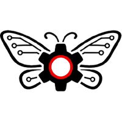

Autronis draait op een zelfgebouwd ecosystem: een centraal dashboard met 48+ features, 95+ database tabellen, multi-agent AI orchestratie, en automatische synchronisatie tussen Mac, PC en telefoon. Geen externe SaaS — alles is eigen code.
Het dashboard (dashboard.autronis.nl) is het zenuwcentrum. Daaromheen draaien projectmappen met Claude Code als development partner, agents die taken uitvoeren, en sync-systemen die alles verbinden. Je praat met de AI, en de AI bouwt mee — met volledige context over het bedrijf, klanten, en projecten.
De AI leest bij elke sessie automatisch bestanden die beschrijven:
Alles in één interface. Gebouwd in Next.js + TypeScript + Tailwind + Turso (cloud SQLite).
| Sectie | Features | Wat het doet |
|---|---|---|
| Home | Dashboard, A.R.I., Briefing | KPI's, AI assistent (Ctrl+A), dagelijks rapport |
| Mijn Dag | Taken, Agenda, Tijd, Focus, Dagritme, Meetings, Ideeën, Projecten, Documenten | Takenbeheer met fases, Google Calendar sync, tijdregistratie, focus sessies (Pomodoro/Deep work), stemming & energie tracking, meeting transcripties |
| Sales | Leads, Klanten, Sales Engine, Outreach, Follow-up, Mail, Prijscalculator, Client Portal, Health Scores | CRM, lead pipeline, website scanning → kansen detectie, email campagnes met A/B testing, automatische follow-ups, client health scoring (0-100) |
| Geld | Financiën, Offertes, Contracten, Proposals, Facturen, Belasting, Kilometers | Multi-tab financieel dashboard, Revolut sync, 7 contracttypes, PDF generatie, BTW aangiftes, km registratie (€0,23/km), urencriterium |
| Creatie | Content Engine, Video Studio, Banners, Animaties, Case Studies | AI posts (LinkedIn/Instagram), Remotion video's, banner templates, scroll-stop animaties, case study pipeline |
| Kennis | Second Brain, Wiki, Learning Radar, Video Samenvattingen, Contract Analyse | Persoonlijke kennisbank, bedrijfswiki, nieuws aggregatie (8+ bronnen), YouTube samenvattingen |
| Strategie | OKR's, Concurrenten, Gewoontes | Kwartaaldoelen, concurrent monitoring met change detection, habit tracking met streaks |
| Beheer | Team, Schermtijd, Mealplan, API Gebruik, Instellingen, 2FA, Audit Log | Agent activiteit, productiviteitsanalyse, maaltijdplanning, API kosten tracking, beveiliging |
Van idee tot werkend project — volledig geautomatiseerd:
Bij "Start Project" gebeurt automatisch:
~/Autronis/Projects/[naam]/ aangemaaktOps Room agents worden ingeschakeld. Daan doet intake, Jones plant, builders bouwen, Toby reviewt.
Je werkt er zelf aan via Claude Code. Alle context-bestanden zijn direct beschikbaar.
24 AI-agents verdeeld over twee teams. Elke agent heeft een specialisatie en naam.
Management: Jones (architect), Toby (reviewer), Daan (intake)
Builders: Wout, Bas, Gabriel, Tijmen, Pedro, Vincent
Support: Ari (research), Rodi (automation), Brent (interviewer)
Pool: Adam, Noah, Jack, Nikkie, Xia, Thijs, Leonard, Rijk
Orchestrator: Autro
Builders: Finn (frontend), Wout-Syb (automation)
Support: Daan, Ari-Syb (research), Bas-Syb (prompts)
Quality: Leo (reviewer), Gabriel-Syb (docs)
| Niveau | Wanneer | Actie |
|---|---|---|
| Groen | Code schrijven, patronen toepassen | Agent mag zelfstandig |
| Geel | Nieuwe bestanden, env vars | Notificatie, ga door tenzij bezwaar |
| Rood | Git push, deploy, DB wijzigingen | WACHT op goedkeuring |
| Systeem | Wat | Hoe |
|---|---|---|
| GitHub | Code | 17 repos op github.com/autronis/, auto-push via post-commit hook |
| USB Stick | Docs, specs, .env | Automatisch bij mount (Mac: LaunchAgent, PC: Scheduled Task) |
| Turso | Database | Cloud SQLite — zelfde data overal (Mac, PC, Vercel) |
| Claude Code → Dashboard | Taken | API sync na elke sessie + hook herinnering |
| Project Sync Server | Projectmappen | Poort 3456, via Tailscale bereikbaar |
| Google Calendar | Agenda | Bidirectionele OAuth sync |
| Screentime | App-gebruik | Desktop app → dashboard API elke 30 sec |
Tailscale IP: 100.118.188.41
Projecten: ~/Autronis/Projects/
Services: sync server, USB sync, screentime, Tailscale
Projecten: OneDrive\Claude AI\Projects\
Sync: USB auto-sync, GitHub pull
WoL app → Mac wakker maken → Tailscale → Termius SSH → cd ~/Autronis/Projects/[project] && claude
Of: Dashboard in Safari → project starten → sync server maakt map aan → SSH → werken
Claude Code waarschuwt automatisch wanneer de context hoog wordt (25%+) en stelt voor om /handoff te doen. De volgende chat pakt naadloos de draad op via /pickup.
| Component | Technologie |
|---|---|
| AI Engine | Claude Code (CLI + VS Code + Opus 4.6) |
| Dashboard | Next.js + TypeScript + Tailwind + Drizzle ORM |
| Database | Turso (cloud SQLite, 95+ tabellen) |
| Hosting | Vercel (dashboard), GitHub Pages (website) |
| Workflows | n8n (self-hosted op Hostinger) |
| Video Rendering | Remotion |
| PDF Generatie | React-PDF |
| Netwerk | Tailscale VPN |
| AWS SES (outreach) | |
| Meeting Transcripties | Recall.ai |
| Mobiel | Tailscale + Termius + WoL + Siri Shortcuts |
| Sync | USB scripts + LaunchAgents + project sync server |
| Service | Functie |
|---|---|
| Turso | Cloud database |
| Vercel | Dashboard hosting + auto-deploy |
| GitHub | Code opslag (17 repos) |
| Google Calendar | Agenda sync |
| Notion | Projectplannen + documentatie |
| Anthropic / OpenAI / Groq | AI providers |
| Tailscale | VPN netwerk |
| Rinkel | Zakelijk telefoon (VoIP) |
| Revolut | Bankrekening + API sync |
| Mollie | Betalingsverwerking |
| n8n | Workflow automation |
| AWS SES | Email verzending |
| Firecrawl | Website scraping |
| Remotion | Video rendering |
| Recall.ai | Meeting transcripties |